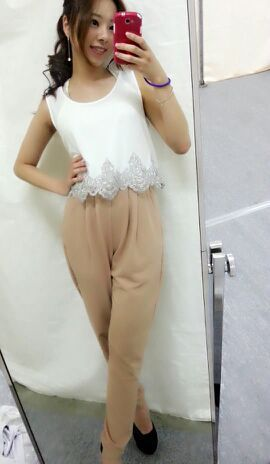
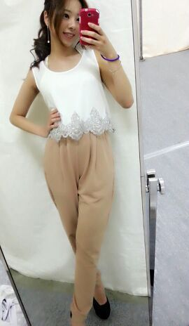

| 2014/05 06 Tue | *..横浜 個別握手会 ..* 〜ろってぃ-〜 |
今日も１日おつかれさまです\(*^^*)/
GWはゆっくりできましたか
 ？
？
私は お稽古頑張っていましたよん..*
ろってぃ-です ..* あっぷ
皆さん今日は何していましたか？
私は お稽古
終わってから ゆったんと二人で化粧水を買ったり フライパンを見たりしてきました!!
昨日は 横浜にて握手会がありました
来てくれた皆 本当にありがとうございます..*
優しい方ばかりなので、いつも「 嬉しゅうキモチっ 」になります.
皆さんと会うたびに元気をもらいます♪
昨日の洋服です (４部 )
(４部 )

まあやが『ロニーは今日もオシャレだね 』
かずみが『ろってぃ-は私より２年遅く産まれたのにオシャレだね 』
やまとが『それと同じの欲しい 』
まいちゅんが『服めっちゃ可愛い... 』
マネージャー様が『ろってぃ-はやっぱそ-ゆ-の似合うよ//』
って いっぱい誉めてくれました゜゜(´O｀)°゜
皆 いつも本当にありがとね。私は嬉しゅうよ〜
この白のトップスの下の部分が
シルバーのビーズやスパンコール等でキラキラ しているので、中に着ている白のインナーは、肩ヒモの部分がシルバーのキラキラになってる物を着て トップスと合わせてみたりしました..*
しているので、中に着ている白のインナーは、肩ヒモの部分がシルバーのキラキラになってる物を着て トップスと合わせてみたりしました..*
インナーまで細かく写真では分かんないんですけどね 笑てへ
もう１着 ( 5部 )
この服かわいくないですかあ
？
シャチがおる..*

赤の膝丈スカートと合わせました^^
靴下はまた足首が透けている靴下に頭にはリボン..*
皆さんは どっちの洋服ですが好みですかあ
？
来てくれた皆 本当にありがとうございます..*
優しい方ばかりなので、いつも「 嬉しゅうキモチっ 」になります.
皆さんと会うたびに元気をもらいます♪
昨日の洋服です
(４部 )

まあやが『ロニーは今日もオシャレだね 』
かずみが『ろってぃ-は私より２年遅く産まれたのにオシャレだね 』
やまとが『それと同じの欲しい 』
まいちゅんが『服めっちゃ可愛い... 』
マネージャー様が『ろってぃ-はやっぱそ-ゆ-の似合うよ//』
って いっぱい誉めてくれました゜゜(´O｀)°゜
皆 いつも本当にありがとね。私は嬉しゅうよ〜
この白のトップスの下の部分が
シルバーのビーズやスパンコール等でキラキラ
しているので、中に着ている白のインナーは、肩ヒモの部分がシルバーのキラキラになってる物を着て トップスと合わせてみたりしました..*
インナーまで細かく写真では分かんないんですけどね 笑てへ
もう１着 ( 5部 )
この服かわいくないですかあ
？
シャチがおる..*
赤の膝丈スカートと合わせました^^
靴下はまた足首が透けている靴下に頭にはリボン..*
皆さんは どっちの洋服ですが好みですかあ
？
あっ!! これも又、昨日放送された大阪での番組なんですけれども... まいやんとななせと３人で『MUSIC EDGE 』とゆう番組に出させて頂きました !!!
動画検索して頂けたら 見れると思いますので是非見てくださいね*^^*
ではでは また更新しますねん..*
おやすみなさい... ろってぃ-

コメント(219)
2014/05/06 22:48